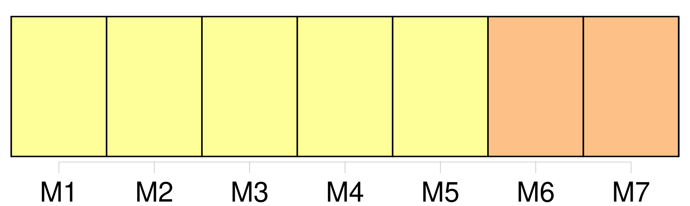

Longueur nb maillons : 36 mentions |
 |
Il parut se consulter ; puis, en hésitant : [7 phrases]
… Je vais [aux Halles] , je vous déballerai avec mes légumes. [2 phrases] Puisque je vous dis que je vais [aux Halles] !! [12 phrases] Depuis que j'ai perdu mon pauvre homme, je vais tous les matins [aux Halles] [92 phrases]
Puis, s'asseyant près de lui : Voici cinq ans au plus que [c'] est bâti …… [2 phrases] [C'] est très-grand, mais il [y] fait rudement froid, l'hiver. [31 phrases] [Les Halles] dormaient toujours. [29 phrases]
Il revoyait les fenêtres luisantes des boulevards, les femmes rieuses, la ville gourmande qu'il avait laissée par cette lointaine nuit de janvier ; et il lui semblait que tout cela avait grandi, s'était épanoui dans cette énormité [des Halles] , dont il commençait à entendre le souffle colossal, épais encore de l'indigestion de la veille. [43 phrases]
Et Florent s'étonnait du calme des maraîchères, avec leurs madras et leur teint hâlé, dans ce chipotage bavard [des Halles] [15 phrases] [Les Halles] gardaient [leur] légèreté noire, avec les mille raies de flamme des persiennes ; sous les grandes rues couvertes, du monde passait, tandis que les pavillons, au loin, restaient déserts, au milieu du grouillement grandissant de leurs trottoirs. [92 phrases]
Cependant, la fenêtre du pignon s'était ouverte, une petite vieille se penchait, regardait le ciel, puis [les Halles] , au loin. [39 phrases]
Maintenant, si cela vous plaît, nous allons faire un tour dans [les Halles] [2 phrases] La grande voix [des Halles] grondait plus haut ; par instants, des volées de cloche, dans un pavillon éloigné, coupaient cette clameur roulante et montante. [28 phrases] Ils y trouvèrent, attelé à une voiture grande comme une brouette, un tout petit âne qui s'ennuyait sans doute, et qui se mit à braire en les voyant, d'un ronflement si fort et si prolongé, que les vastes toitures [des Halles] en tremblaient. [4 phrases] Ils causaient maintenant, en retournant sous [les Halles] [11 phrases] Mais Baratte était bien tombé ; tout le carnaval de l'ancien marché des Innocents se trouvait enterré, à cette heure ; on en était [aux Halles centrales] , à ce colosse de fonte, à cette ville nouvelle, si originale. [11 phrases] Il y avait là des marchandes très-propres, des maraîchers en blouse, des porteurs sales, le paletot gras des charges de nourriture qui avaient traîné sur les épaules, de pauvres diables déguenillés, toutes les faims matinales [des Halles] , mangeant, se brûlant, écartant un peu le menton pour ne pas se tacher de la bavure des cuillers. [15 phrases] Quand on voulut l'envoyer à l'école, il tomba malade, il fallut le ramener [aux Halles] Il [en] connaissait les moindres recoins, [les] aimait d'une tendresse de fils, vivait avec des agilités d'écureuil, au milieu de [cette forêt de fonte] [13 phrases] Et Florent regardait [les grandes Halles] sortir de l'ombre, sortir du rêve, où il [les] avait vues, allongeant à l'infini [leurs] palais à jour. [Elles] se solidifiaient, d'un gris verdâtre, plus géantes encore, avec [leur] mâture prodigieuse, supportant les nappes sans fin de [leurs] toits.
[Elles] entassaient [leurs] masses géométriques ; et, quand toutes les clartés intérieures furent éteintes, qu' [elles] baignèrent dans le jour levant, carrées, uniformes, [elles] apparurent comme une machine moderne, hors de toute mesure, quelque machine à vapeur, quelque chaudière destinée à la digestion d'un peuple, gigantesque ventre de métal, boulonné, rivé, fait de bois, de verre et de fonte, d'une élégance et d'une puissance de moteur mécanique, fonctionnant là, avec la chaleur du chauffage, l'étourdissement, le branle furieux des roues. [9 phrases] Au carrefour de la rue [des Halles] , les choux faisaient des montagnes ; les énormes choux blancs, serrés et durs comme des boulets de métal pâle ; les choux frisés, dont les grandes feuilles ressemblaient à des vasques de bronze ; les choux rouges, que l'aube changeait en des floraisons superbes, lie de vin, avec des meurtrissures de carmin et de pourpre sombre. [4 phrases] Et il soutenait qu'ils n'étaient pas morts, qu'arrachés de la veille, ils attendaient le soleil du lendemain pour lui dire adieu sur le pavé [des Halles] |

|
Il est possible de télécharger la ressource sur la page Ortolang |
Si vous avez des questions ou vous voyez des erreurs, merci d'envoyer un mail à silvia.federzoni89@gmail.com |